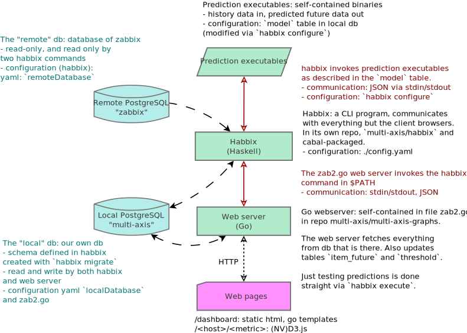

Multi-Axis Documentation
Home
Home
Getting Started
Database and Data
Habbix
Prediction Framework
Linreg Prediction Unit
Backend server (Gobbix)
Java prediction unit
Testing
On Github:
Habbix
,
Web server and client-side
Architecture diagram
